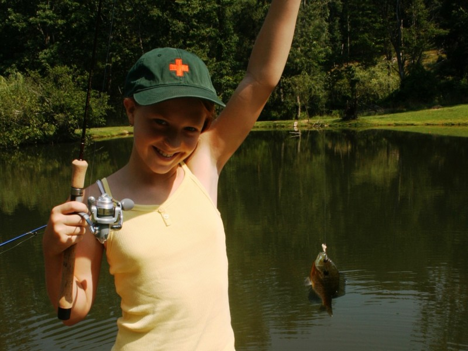

April 17, 2018
Fresh (news) from your Seafood Counter

The products available at your seafood counter are changing. For the first time global consumption of farm raised seafood has surpassed wild caught. Now more than 50% of fish consumed in the US is from Aquaculture—the fastest growing form of food production in the world.
Wild caught options at your seafood counter are changing as well. The US has been a leader in implementing sustainable fishing practices, but of all the fish on the US Market 80% is imported and under looser oversight. Imports of illegal, unreported, and unregulated (IUU) fish not only threaten fish stocks and marine mammals with wasteful (heartbreaking) by-catch, they can be misrepresented—a cheaper, more readily available fish is substituted for a more expensive filet, or worse a threatened species is sold off as marketable fish.
As of January 1, 2018 imports to the US of 13 listed seafood products must be accompanied by record keeping in an effort to prevent IUU fishing. Fingers crossed this will be a win for the economy, the ocean, and the consumer.
Not all aquaculture and wild caught fish are created equal. When you are standing at your seafood counter and want to know if your farm raised or wild caught option is sustainable you can enter the species and import or domestic location into the handy Seafood Watch app by the Monterey Bay Aquarium or visit their website below.
www.seafoodwatch.org.
www.fao.org/fishery/sofia/en
13 Listed Seafood Products under IUU Import Regulations
• Abalone
• Atlantic Cod
• Blue Crab (Atlantic)
• Dolphinfish (Mahi Mahi)
• Grouper
• King Crab (red) • Pacific Cod
• Red Snapper
• Sea Cucumber • Sharks
• Shrimp
• Swordfish
• Tunas: Albacore, Bigeye,
Skipjack, Yellowfin, and Bluefin